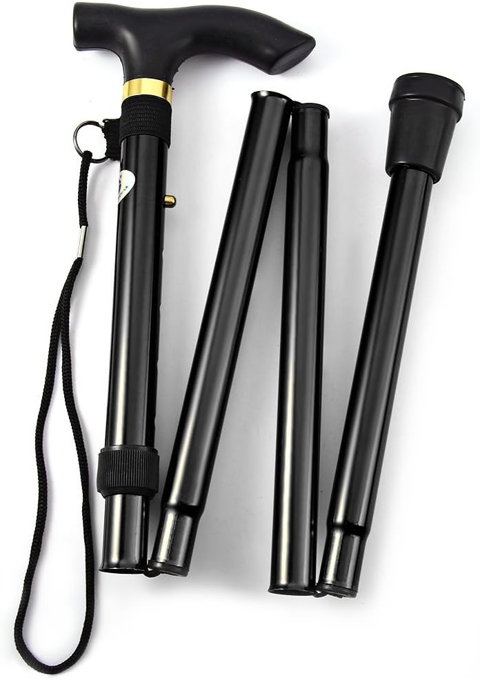
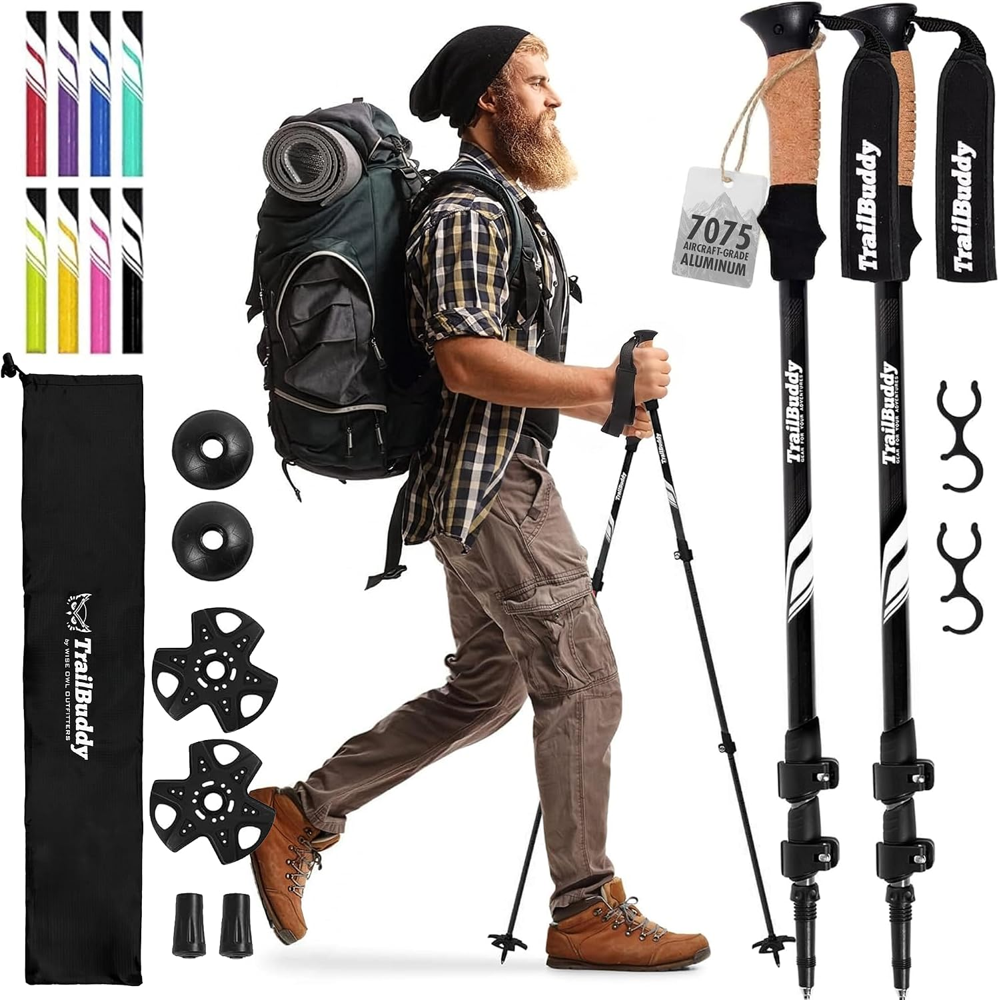
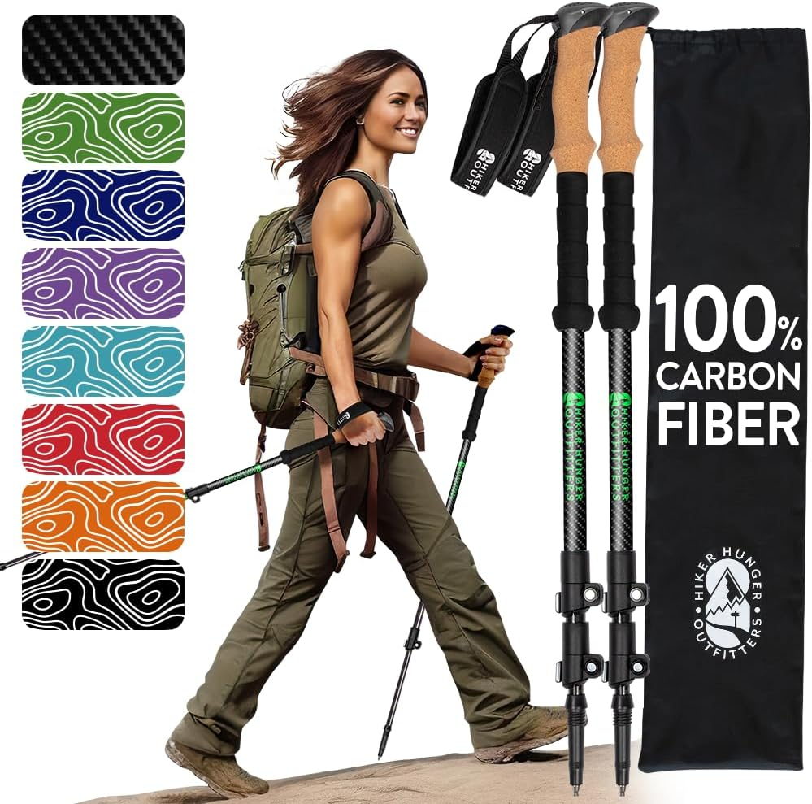
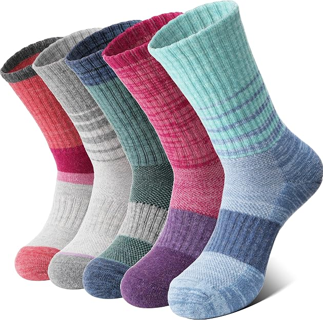
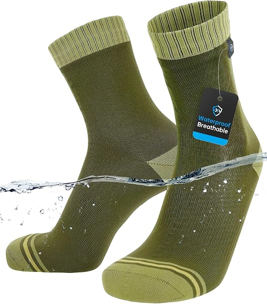
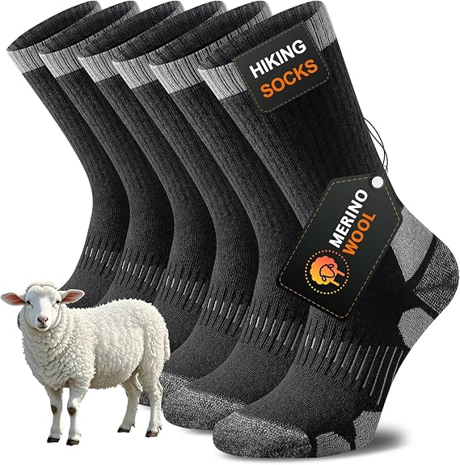
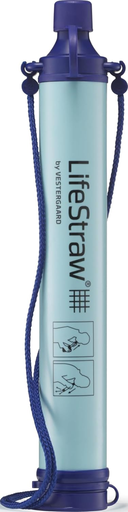
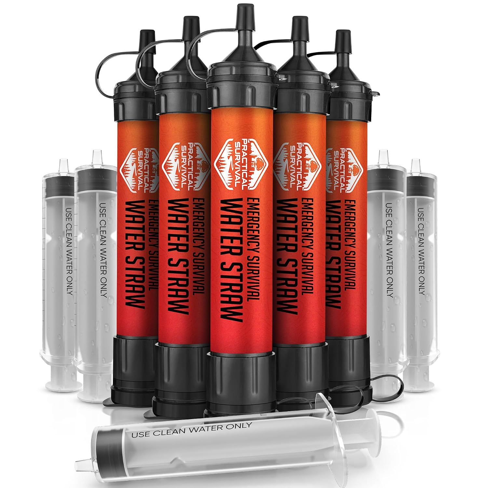
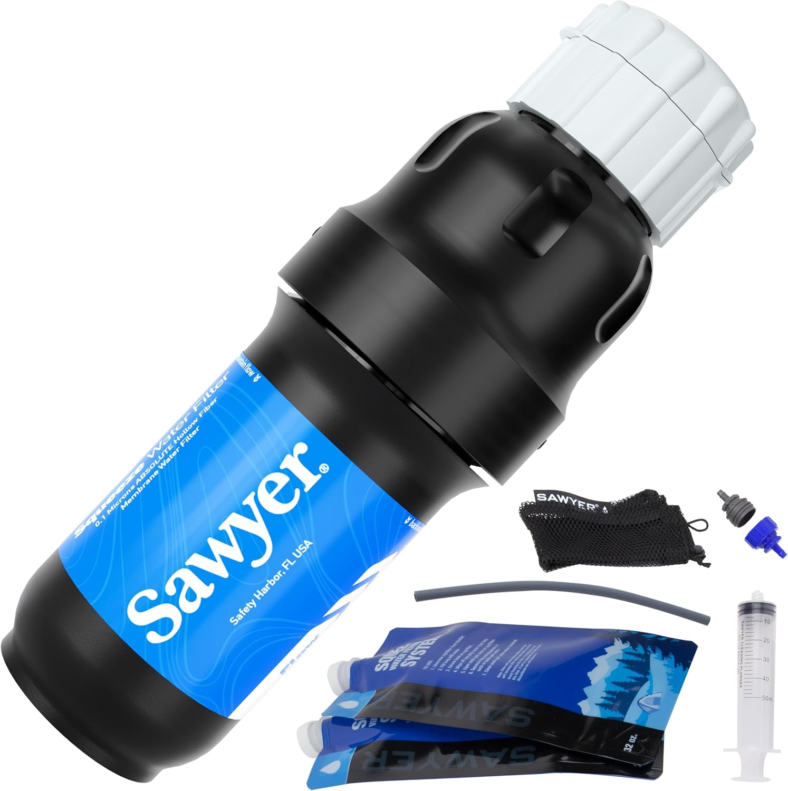

We pick gear the same way we pick routes: by starting with what thousands of other walkers have already bought and rated highly, rather than by guessing. Anything that stays near the top of its category on Amazon has been through more trail testing than any single reviewer could manage, so that popularity is our filter — then we look at whether the specs actually suit multi-day walking.
Listings change daily, so instead of a fixed price we show the range this kind of item usually sells in, plus the technical detail that decides whether it's right for you. Tap through for the current price on Amazon.
Trekking poles
Roughly a fifth of the load off your knees on descents

For long days with a light pack
Ultralight trail trekking poles
You plant a pole roughly 1,500 times an hour, so every 50 g in the shaft is felt in the shoulders by mid-afternoon. A light pair is the one worth carrying when the day is long and the pack is small.
Specs
- Shaft
- Carbon / 7075 alloy
- Weight, pair
- approx. 450–500 g
- Length range
- 65–135 cm
- Grip
- EVA foam, padded strap
- Tips
- Carbide, rubber feet + baskets

For flying to the trailhead
Adjustable compact hiking poles
Poles that collapse short enough to go inside a 40 L pack save you checking a bag, and the quick-lock sections let you shorten them for a climb and lengthen them for the way back down without stopping to fiddle.
Specs
- Construction
- 3-section telescopic
- Packed length
- approx. 60–65 cm
- Weight, pair
- approx. 500–560 g
- Locking
- External lever clamp
- Grip
- Cork-feel, extended foam

For steep descents under load
All-terrain shock-absorbing poles
On volcanic scree or a long zigzag down, the spring damping takes the jolt out of each plant and the wider baskets stop the tips sinking. Heavier than a racing pole, and worth it on rough ground.
Specs
- Anti-shock
- Internal spring, switchable
- Weight, pair
- approx. 550–620 g
- Length range
- 65–135 cm
- Tips
- Carbide, mud + snow baskets
- Straps
- Padded, adjustable
Trekking socks
The cheapest way to protect the part of you that has to finish the walk

For back-to-back walking days
Merino wool anti-blister hiking socks
Blisters come from damp skin rubbing, not from distance. Merino holds its warmth when wet, moves sweat out faster than cotton, and can be worn a second day without smelling — which matters when you're washing socks in a sink.
Specs
- Blend
- Merino, nylon, elastane
- Cushioning
- Full terry loop footbed
- Height
- Crew, above boot cuff
- Season
- 3-season, midweight
- Care
- Machine wash 30°C, no tumble

For stiff boots and rocky ground
Cushioned mid-crew trail socks
A heavier boot needs padding where it bites: the heel cup, the toe box, and the ankle bone. The extra height keeps the boot cuff off your shin on long climbs, and the arch band stops the sock creeping.
Specs
- Cushioning
- Reinforced heel and toe
- Height
- Mid-crew
- Blend
- Wool-synthetic mix
- Fit
- Compression arch band
- Sold as
- Multipack

For trips that start hot and finish cold
All-weather outdoor trekking socks
A summit day can cross 20°C between the car park and the crater rim. Ventilation panels over the instep and a flat toe seam let one pair cover that spread without your feet either cooking or going numb.
Specs
- Blend
- Merino with synthetic wicking yarn
- Ventilation
- Mesh instep panels
- Toe seam
- Flat-stitched
- Weight
- Midweight
- Sold as
- Multipack
Water filter straws
Bacteria and protozoa only — not viruses, salt or chemicals

For day walks that cross streams
Personal water filter straw
Carrying four litres of water costs you four kilos. A straw lets you carry one and refill from whatever you pass, which is the single biggest weight saving available on a hot day route.
Specs
- Filtration
- 0.1 micron hollow fibre
- Removes
- Bacteria, protozoa, microplastics
- Does not remove
- Viruses, salt, chemicals
- Lifespan
- up to approx. 4,000 L
- Weight
- approx. 60 g

For filling bottles, not just drinking
High-capacity trail filter straw
Standard bottle threading means you can screw this onto a bottle or a gravity bag and filter for a whole group, instead of everyone taking turns lying face-down at the water's edge.
Specs
- Fitting
- Standard bottle thread
- Filtration
- 0.1 micron hollow fibre
- Flow rate
- approx. 0.5 L per minute
- Lifespan
- up to approx. 4,000 L
- Included
- Backflush syringe

For the bottom of the pack, all season
Ultralight survival water filter
Light enough that it lives in the pack whether you plan to use it or not. That is the point: the day you need it is the day the tap at the refuge is dry or the route takes longer than it should have.
Specs
- Filtration
- 0.1 micron micro-membrane
- Weight
- approx. 50 g
- Storage
- Dry fully before packing away
- Watch for
- Freezing ruins the membrane
- Included
- Pouch and lanyard
Packing
Working out what else to bring?
The gear checklist covers everything worth packing, from documents to sleep systems — tick items off, then print it or save it as a PDF.
Open the Gear Checklist
Where to use it
Still choosing a trek?
Coastal paths, day walks and summit routes, each led by a local guide and bookable straight from the listing.
Browse the routes
About the prices: Amazon prices move daily, so the ranges above are what this type of item usually sells for rather than a quoted price. The figure on Amazon at the time you click is the one that counts.
Disclosure: As an Amazon Associate, TrekkingWays earns from qualifying purchases. If you buy through a link on this page we may earn a small commission, at no extra cost to you.